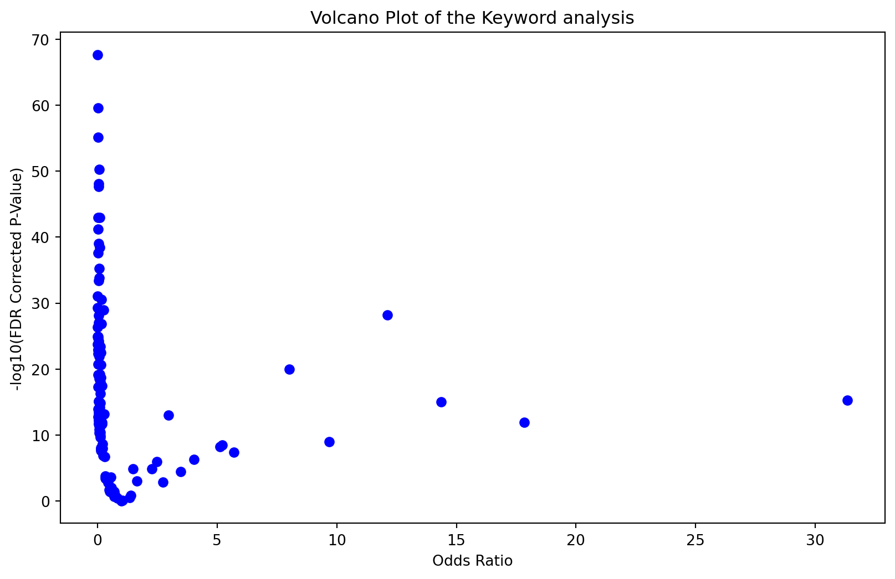

import pandas as pd
import numpy as np
import matplotlib.pyplot as pltIntroduction
In the vast realm of email communication, distinguishing between legitimate (ham) and unwanted (spam) messages is a constant challenge. Leveraging machine learning and statistical analysis, this blog post embarks on a journey to identify crucial keywords that significantly contribute to the categorization of emails. The ultimate goal is to uncover features that enhance the accuracy of models in predicting spam emails.
Loading and Preprocessing the Email Dataset
Our exploration begins by loading the email dataset and preparing it for analysis. Each email is labeled as either ‘ham’ or ‘spam’, and we aim to extract valuable insights from the text content.
df = pd.read_csv('./spamhamdata.csv', sep = '\t', header=None)
df.columns = ['email_type', 'text']
df['label']=df['email_type'].apply(lambda x: 0 if x == 'ham' else 1)
df.head(7)| email_type | text | label | |
|---|---|---|---|
| 0 | ham | Go until jurong point, crazy.. Available only ... | 0 |
| 1 | ham | Ok lar... Joking wif u oni... | 0 |
| 2 | spam | Free entry in 2 a wkly comp to win FA Cup fina... | 1 |
| 3 | ham | U dun say so early hor... U c already then say... | 0 |
| 4 | ham | Nah I don't think he goes to usf, he lives aro... | 0 |
| 5 | spam | FreeMsg Hey there darling it's been 3 week's n... | 1 |
| 6 | ham | Even my brother is not like to speak with me. ... | 0 |
Text Cleaning and Keyword Extraction
To identify important keywords, we perform text cleaning by converting words to lowercase, removing numbers, punctuation, and extra spaces. Additionally, we apply lemmatization to obtain the base form of words and remove common English stop words.
import re
import nltk
nltk.download('stopwords')
nltk.download('wordnet')
from nltk.corpus import stopwords
from nltk.stem import WordNetLemmatizer
lemmatizer = WordNetLemmatizer()
def clean_text(sentence):
# Converting all words to lower
sentence_lowered=sentence.lower()
# removing puntuations and numbers using regular expression
sentence_no_numbers = re.sub(r'\d+', '', sentence_lowered)
sentence_no_punctuations = re.sub(r'[^\w\s]', '', sentence_no_numbers)
sentence_no_extra_spaces = re.sub(' +', ' ', sentence_no_punctuations)
# fetched words from nltk package
stop = stopwords.words('english')
stop_words_removed_sentence=[]
for k in sentence_no_extra_spaces.split(" "):
if k not in stop:
stop_words_removed_sentence = [lemmatizer.lemmatize(word) for word in sentence_no_extra_spaces.split() if word not in stop and len(word) > 2]
return stop_words_removed_sentence[nltk_data] Downloading package stopwords to
[nltk_data] /Users/apolloos/nltk_data...
[nltk_data] Package stopwords is already up-to-date!
[nltk_data] Downloading package wordnet to
[nltk_data] /Users/apolloos/nltk_data...
[nltk_data] Package wordnet is already up-to-date!# example of text cleaning
text_sample="I am.. .. $so angry.. that a cu i made this post available"
clean_text(text_sample)['angry', 'made', 'post', 'available']df['keywords']=df['text'].apply(clean_text)
df.head(5)| email_type | text | label | keywords | |
|---|---|---|---|---|
| 0 | ham | Go until jurong point, crazy.. Available only ... | 0 | [jurong, point, crazy, available, bugis, great... |
| 1 | ham | Ok lar... Joking wif u oni... | 0 | [lar, joking, wif, oni] |
| 2 | spam | Free entry in 2 a wkly comp to win FA Cup fina... | 1 | [free, entry, wkly, comp, win, cup, final, tkt... |
| 3 | ham | U dun say so early hor... U c already then say... | 0 | [dun, say, early, hor, already, say] |
| 4 | ham | Nah I don't think he goes to usf, he lives aro... | 0 | [nah, dont, think, go, usf, life, around, though] |
Frequency Analysis of Keywords
We analyze the frequency of each word and identify a set of highly repeated words. These words serve as potential candidates for contributing to the categorization process.
#getting the most frequently repeated words
#| echo: false
all_words=[]
for i in df['keywords']:
for j in i:
all_words.append(j)
count =[]
for i in all_words:
count.append(all_words.count(i))
df_words_count = pd.DataFrame([all_words, count], index = ['words', 'count']).T
df_words_count.drop_duplicates(inplace=True)
df_words_count.sort_values('count', ascending=False)| words | count | |
|---|---|---|
| 93 | call | 605 |
| 410 | get | 401 |
| 40 | dont | 298 |
| 16 | free | 278 |
| 405 | ltgt | 276 |
| ... | ... | ... |
| 16257 | visitor | 1 |
| 16241 | forwarding | 1 |
| 16239 | brilliantly | 1 |
| 16226 | outreach | 1 |
| 44521 | bitching | 1 |
7760 rows × 2 columns
#selecting 149 highly repeated words
df_high_freq = df_words_count[df_words_count['count'] > 50]
high_freq_word = list(df_high_freq['words'])
len(df_high_freq.index)149# counting instances of occurence of highly repeated words in ham and spam emails
ham=[]
spam=[]
for word in high_freq_word:
ham_count=0
spam_count=0
for ind in range(len(df)):
current_row = df.iloc[ind]
if word in current_row['keywords']:
if current_row['label']==0:
ham_count+=1
else:
spam_count+=1
#print(word,ham_count,spam_count)
ham.append(ham_count)
spam.append(spam_count)
df_odds = pd.DataFrame([high_freq_word, ham, spam], index= ['keywords','ham_count','spam_count']).T
df_odds = df_odds[df_odds['spam_count'] != 0]
df_odds.head(5)| keywords | ham_count | spam_count | |
|---|---|---|---|
| 0 | great | 93 | 11 |
| 1 | got | 222 | 7 |
| 2 | wat | 91 | 1 |
| 3 | free | 58 | 169 |
| 4 | win | 12 | 62 |
Odds Ratio and Significance Testing: A Statistical Lens
Now, we delve into the statistical significance of each keyword using odds ratio and p-values. The odds ratio provides insights into the likelihood of a keyword occurring in spam compared to ham emails. Simultaneously, p-values quantify the evidence against a null hypothesis, helping us assess the significance of the observed differences
import pandas as pd
from scipy.stats import fisher_exact
# Calculate odds ratio and p-value for each word
odds_ratios = []
p_values = []
for index, row in df_odds.iterrows():
contingency_table = [
[row['spam_count'], row['ham_count']],
[len(df.index) - row['spam_count'], len(df.index) - row['ham_count']]
]
odds_ratio, p_value = fisher_exact(contingency_table)
odds_ratios.append(odds_ratio)
p_values.append(p_value)
# Add results to the data frame
df_odds['Odds_Ratio'] = odds_ratios
df_odds['P_Value'] = p_values
# Display the updated data frame
df_odds.head(5)| keywords | ham_count | spam_count | Odds_Ratio | P_Value | |
|---|---|---|---|---|---|
| 0 | great | 93 | 11 | 0.116535 | 1.838932e-17 |
| 1 | got | 222 | 7 | 0.030313 | 1.735920e-57 |
| 2 | wat | 91 | 1 | 0.010811 | 2.614224e-26 |
| 3 | free | 58 | 169 | 2.973654 | 5.124485e-14 |
| 4 | win | 12 | 62 | 5.213551 | 2.553913e-09 |
Benjamini-Hochberg Correction and Visualization
The p-value tests the hypothesis that the odds of the keyword occurring in either ham or spam emails are equal (i.e., 1.0). However, the p-values can easily provide misleading results for two reasons: The p-value does not measure the magnitude of the differences and it raises the risk of false positive rate. To address the issue of false positives, we apply the Benjamini-Hochberg correction. We then visualize the results using a volcano plot, highlighting keywords with substantial odds ratios and low corrected p-values.
# Apply Benjamini-Hochberg correction
from statsmodels.stats.multitest import multipletests
_, corrected_p_values, _, _ = multipletests(df_odds['P_Value'], method='fdr_bh')
df_odds['FDR_Corrected_P_Value'] = corrected_p_values# Create a volcano plot
plt.figure(figsize=(10, 6))
plt.scatter(df_odds['Odds_Ratio'], -1 * np.log10(df_odds['FDR_Corrected_P_Value']), color='blue')
# Add labels and title
plt.xlabel('Odds Ratio')
plt.ylabel('-log10(FDR Corrected P-Value)')
plt.title('Volcano Plot of the Keyword analysis')
# Show the plot
plt.show()
Final Selection of Keywords
By setting criteria for importance, we narrow down the selection to keywords with odds ratios greater than 5 and FDR-corrected p-values less than 10^-5. These selected keywords can serve as impactful features for enhancing the accuracy of email categorization models.
df_final = df_odds[(df_odds['Odds_Ratio'] > 5) & (df_odds['FDR_Corrected_P_Value'] < 10**-5)]
list(df_final['keywords'])['win',
'txt',
'customer',
'prize',
'claim',
'mobile',
'cash',
'urgent',
'nokia',
'service',
'box',
'tone']Conclusion
In conclusion, the application of odds ratios and p-values provides a robust statistical foundation for keyword selection. These measures not only quantify the magnitude of differences but also mitigate the risk of false positives. The selected keywords, enriched with statistical significance, can now be employed as powerful features to enhance the accuracy and predictive capabilities of machine learning models in identifying spam emails. Source: Feature Engineering and Selection: A Practical Approach for Predictive Models